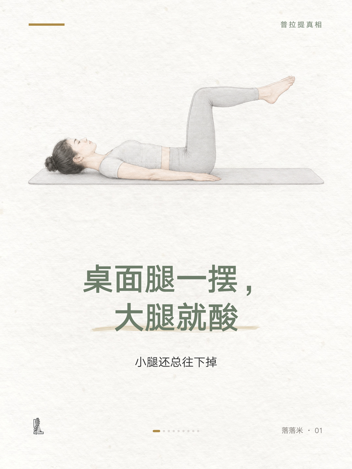
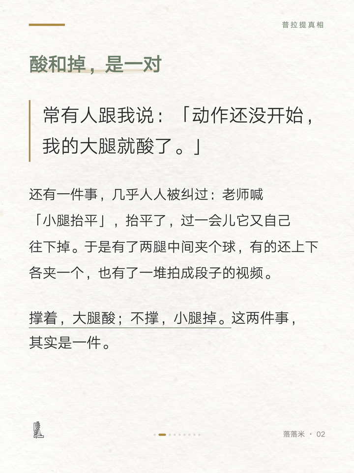
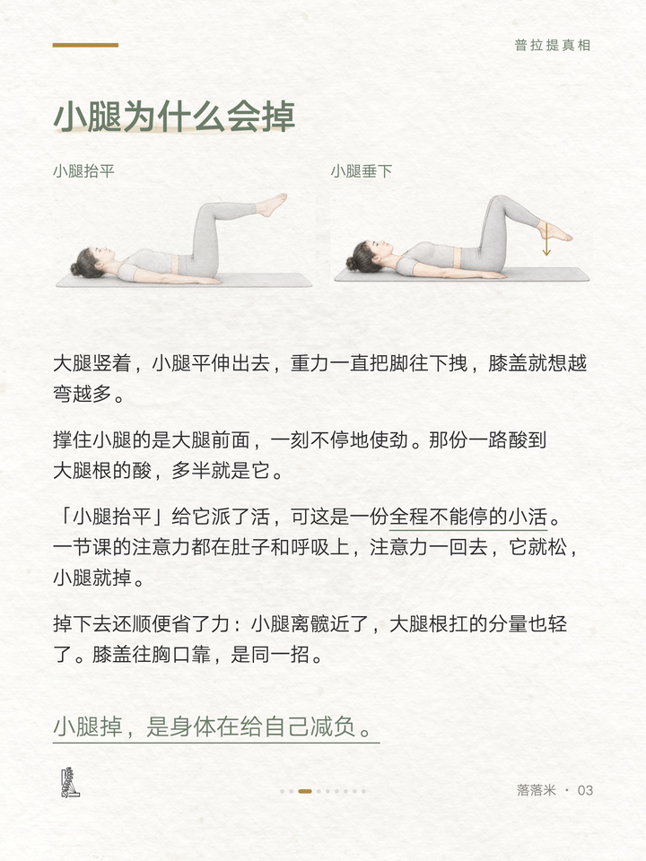
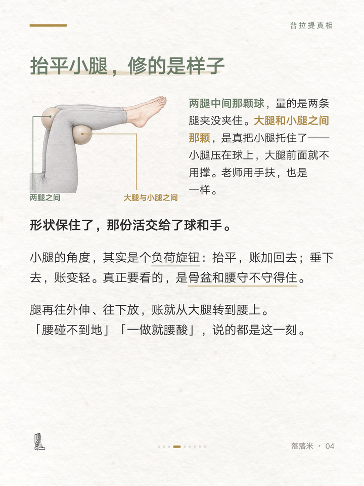
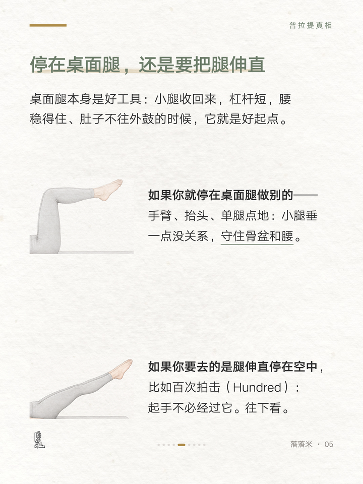
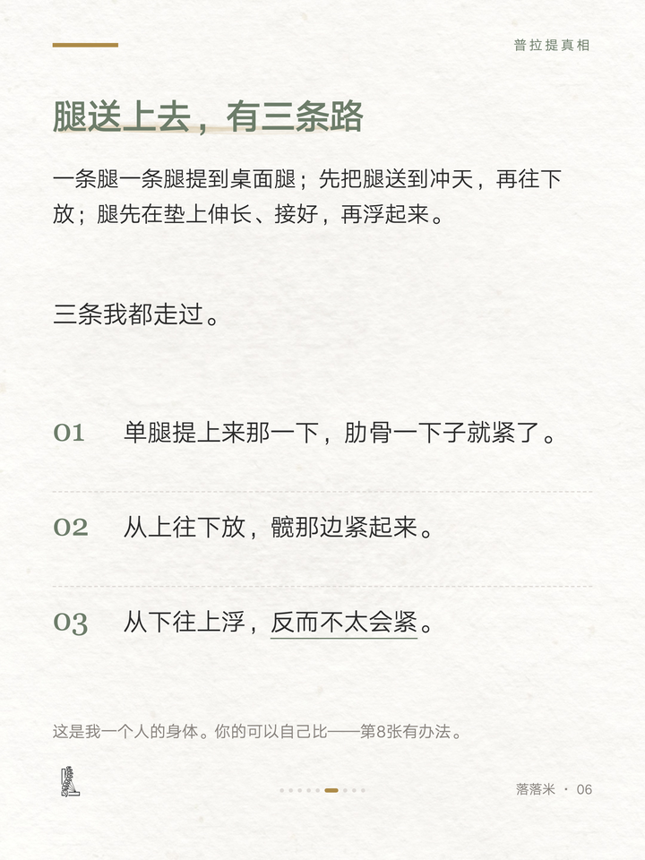
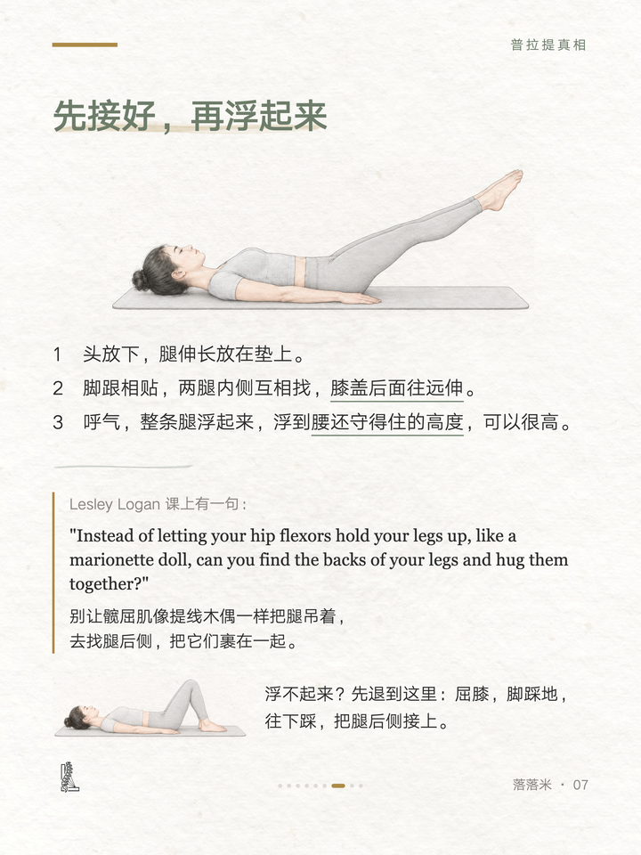
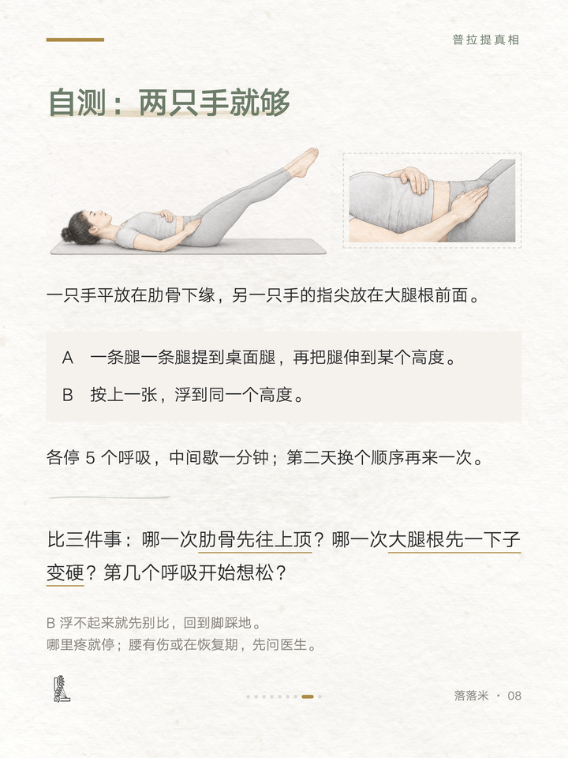
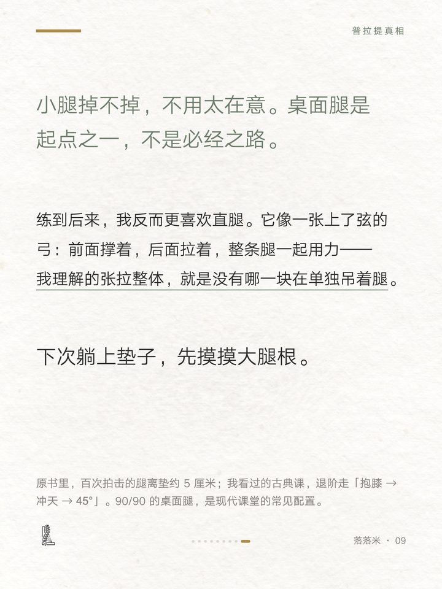

普拉提真相 #015
普拉提桌面腿一摆，大腿就酸

1 / 9

2 / 9

3 / 9

4 / 9

5 / 9

6 / 9

7 / 9

8 / 9

9 / 9
← 左右滑动浏览全部卡片 →
桌面腿刚摆好，大腿先酸；再撑一会儿，小腿自己往下掉。被老师纠过「小腿抬平」的，应该都懂。
这篇想讲清楚三件事：小腿为什么会掉，夹球到底在帮你做什么，以及——如果你要去的是腿伸直的动作，起手其实不必经过桌面腿。
第8张是自测，躺下来两只手就能做。